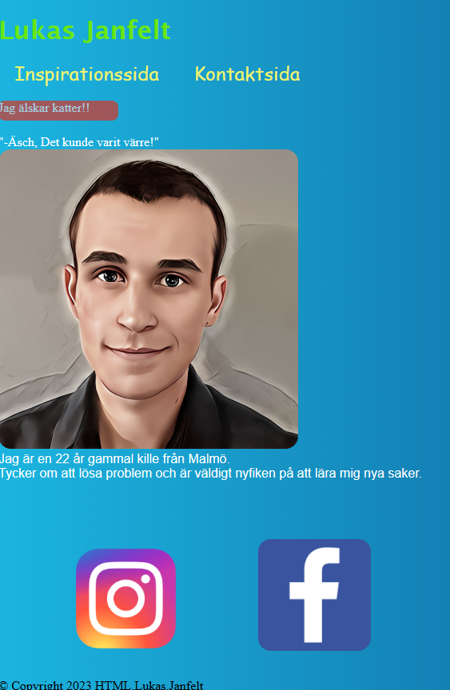
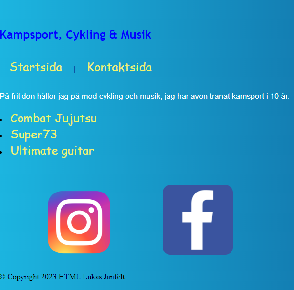
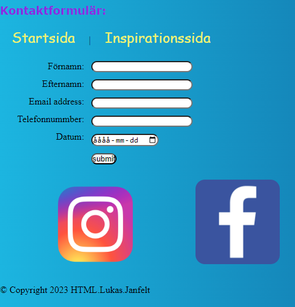
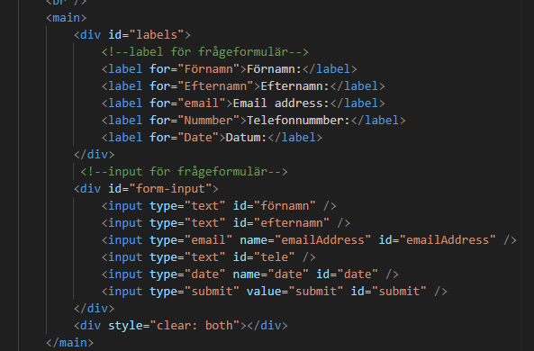

Profil var en uppgift där man skulle göra en sida som handlade om sig själv genom att ta hjälp av olika semantiska taggar och CSS. Det är alltså första gången jag använder CSS vid detta tillfället. Använde mig av en bakgrund som gick från en färg till en annan, så kallad linear-gradient.
Profil


På sidan finns det en navbar som tar en genom de olika sidorna, det finns även länkar till mina intressen och sociala medier. Detta var innan jag visste att man kunde använda färdiga ikoner till sociala medier i stället för bilder.

Tog hjälp av labels och inputs för att skapa formuläret. För att bestämma utseende och position så använde jag mig av id-klasser och skrev in padding och margin inuti CSS-filen.

Inuti html-dokumentet använde jag mig av semantiska taggar och kommentarer för att göra det lättare att hålla koll på strukturen.